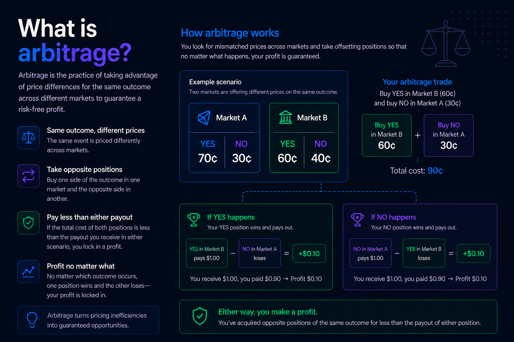

Home
Return to the project overview and see the full arbitrage workflow at a glance.
Open HomeCore concept page for pricing inefficiencies and hedge mechanics.

Video: "What is Arbitrage?" by Stickman Business.
These are realistic examples of paired sports contracts where opposite positions cost less than a $1.00 payout, creating a locked-in spread before fees.
| Event | Position A | Position B | Total Cost | Locked Profit | ROI |
|---|---|---|---|---|---|
| Lakers vs Suns Winner | Lakers YES @ 47 cents (Polymarket) | Lakers NO @ 49 cents (Kalshi) | 96 cents | 4 cents | 4.17% |
| Chiefs vs Bills Winner | Chiefs YES @ 51 cents (Polymarket) | Chiefs NO @ 46 cents (Kalshi) | 97 cents | 3 cents | 3.09% |
| Yankees vs Red Sox Winner | Yankees YES @ 44 cents (Polymarket) | Yankees NO @ 51 cents (Kalshi) | 95 cents | 5 cents | 5.26% |
| Real Madrid vs Barca Winner | Real Madrid YES @ 53 cents (Polymarket) | Real Madrid NO @ 45 cents (Kalshi) | 98 cents | 2 cents | 2.04% |
Return to the project overview and see the full arbitrage workflow at a glance.
Open HomeConnect this arbitrage logic directly to Polymarket and Kalshi contract data.
Open What is a Prediction Market?See how positions are executed and validated against margin and cost thresholds.
Open Trades & MarginsView daily, weekly, and all-time performance after arbitrage opportunities are taken.
Open PnL Snapshot